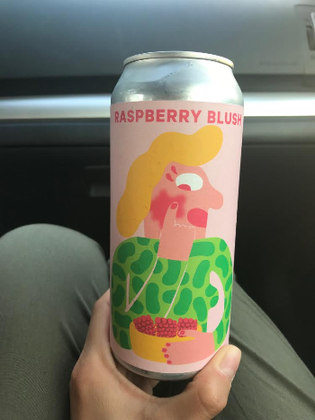

Hoppin' Around is a website dedicated to highlighting and reviewing Microbreweries throughout all of the boroughs of New York City. From Harlem to Astoria, we personally review local microbrews and give out honest unbiased opinions about New York's well known and lesser known brews. From IPA’s to APA’s and everything in between, we’re focused on letting you know where the best beers are.
Our team: A bunch of beer loving and diverse individuals. Our style, we investigate and research what the brewers are saying about their blends and then do a tasting and testing to see if they measure up. We’re bar hopping to give you everything you need to know about our city’s beer culture. We hope you enjoy!